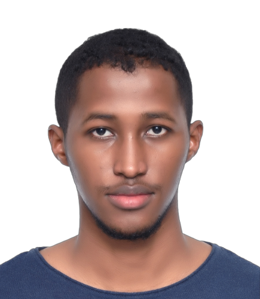

Hussein Abdikarim Hussein

Summary
Hey there👋 I'm Hussein Abdikarim, a TED University student with a passion for Coding.
I'm excited to share my journey as I pursue my dreams and explore the world of Computer Engineering.
Follow along as I learn, grow, and embrace new experiences during my university years.
Education
2025 (Expected Graduation)
TED University (50% Scholarship)
- Bachelor of Computer Engineering
- GPA: 2.82/4.0
2019-2020
Al Fayez International School (Turkey)
- High-School Diploma
- GPA: 3.43/4.0
Work Experience
Summer Internship - Center for Media and Technology CMT (Somalia)
-
During a rewarding summer, I had the incredible opportunity to work as an intern at the Center for Media and
Technology (CMT) in Somalia.
This valuable experience allowed me to immerse myself in the world of media and technology while contributing to
the organization's meaningful initiatives.
Skills
-
Hard Skills
- Programming Languages: Proficient in Java and C.
- Web Development: Skilled in HTML, CSS, and JavaScript, capable of creating responsive and
visually appealing websites.
- Database Management: Knowledgeable in MySQL, capable of designing and maintaining databases
for efficient data storage and retrieval.
- Software Tools: Experienced in using software development tools such as Microsoft Word,
Excel and Git.
-
Soft Skills
- Effective Communication: Strong verbal and written communication skills, adept at
articulating complex technical concepts to both technical and non-technical audiences.
- Problem-Solving: Proven ability to analyze challenges, identify root causes, and develop
innovative solutions to achieve project objectives.
- Team Collaboration: Skilled at working collaboratively in diverse teams, valuing different
perspectives, and contributing to a positive team dynamic.
- Time Management: Excellent organizational skills, proficient in prioritizing tasks and
meeting deadlines without compromising quality.
Additional Info